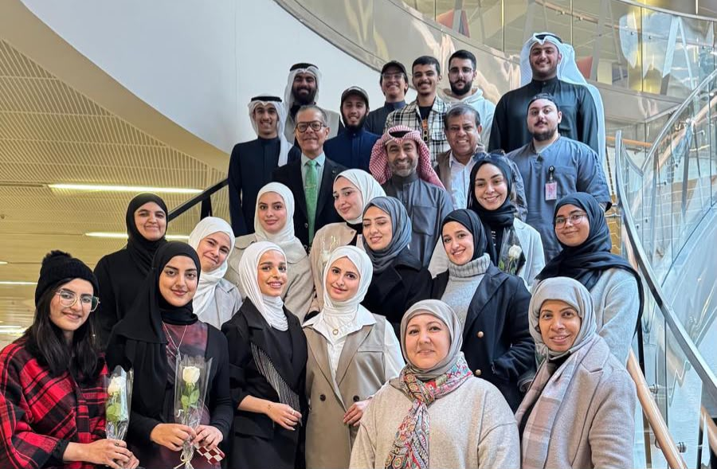
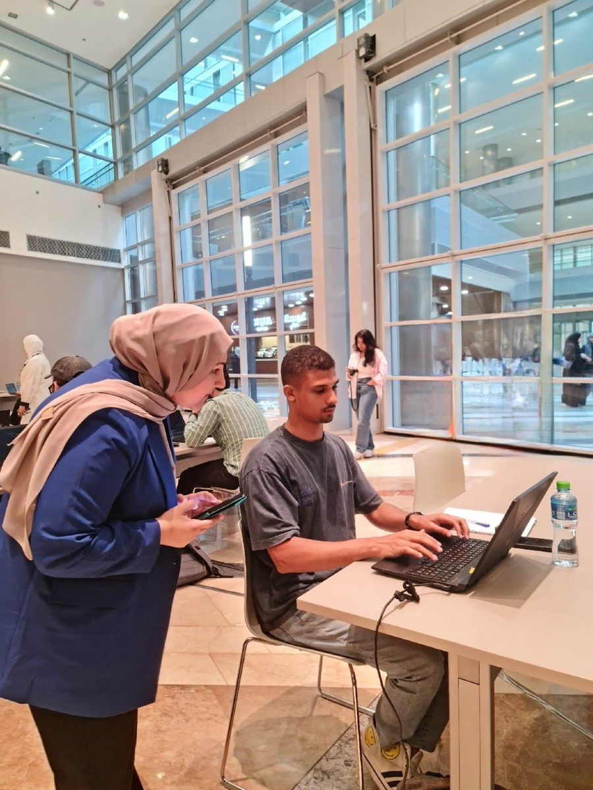

Student Clubs
The student clubs I have supervised and supported at Kuwait University. Through them, students run workshops, talks and competitions in computing, data science and AI, and take their skills into the wider community.
ClickIT Club
Faculty supervisor, fall 2022 to summer 2025
From fall 2022 to summer 2025 I was faculty supervisor of ClickIT, the student club of the Department of Information Science at Kuwait University. I supervised its workshops, seminars and competitions in computing and AI, and its volunteering and outreach with other student groups and national organizations. I handed the club to a new supervisor in 2025.
- 40+students supervised as club members and officers, 2022 to 2025
- 1,000+attendees at our workshops, talks, competitions and events, 2022 to 2025

Academic year 2024 to 2025
-
21 and 23 Apr
Introduction to Python for Data Science
A two-day workshop for College of Life Sciences students, building the technical skills they need for academic and research work.
WorkshopWith the ACM Student Chapter at KU and PyData Kuwait
-
15 to 26 Apr
CODED Academy X
Club members volunteered at CODED's program for empowering girls in technology and entrepreneurship, held at the College of Life Sciences.
VolunteeringWith CODED
-
9 to 19 Apr
Kuwait Codes
Club members supported CODED's initiative that teaches high-school students the basics of programming and modern technologies, held at the College of Life Sciences.
VolunteeringWith CODED
-
7 to 8 Apr
National Entrepreneurship Competition
Nineteen teams competed at the College of Life Sciences, with lectures on entrepreneurship concepts alongside the competition.
CompetitionCo-organized with the ACM Student Chapter at KU, a high-school Capstone team and the Sabah Al-Ahmad Center for Giftedness and Creativity (SACGC)
-
17 Mar
AI Tools for Daily Life
A student-presented workshop on AI tools and their academic uses. More than 50 students from colleges across the university took part.
WorkshopWith Women in Data Science (WiDS) Kuwait at KU and the ACM Student Chapter
-
17 and 19 Feb
Introduction to Python Programming
Basic programming concepts and hands-on Python, for students across technical and scientific fields.
WorkshopWith the KARS Club and PyData Kuwait
-
10 to 11 Dec
Nature Masterclass: Get Published
Club members volunteered at this workshop on scientific publishing for researchers, held at Kuwait University. They ran registration, guided participants to the halls and helped the session run smoothly.
VolunteeringFor the Kuwait Foundation for the Advancement of Sciences (KFAS)
-
25 to 27 Nov
AI and Cybersecurity exhibition
Students staffed an information booth for three days at the exhibition that accompanied a major conference. They explained the Data Science and AI major, the field's future and its job opportunities.
OutreachRepresenting the Department of Information Science
-
18 Nov
Principles of Wellbeing: Body, Surroundings and Self
A workshop on building healthy, balanced relationships across the three circles of a person's life (self, mind and body), and on coping with the challenges of daily life.
WorkshopWith a guest speaker
-
14 Nov
Diabetes Day
An interactive booth at the Nutrivia club's Diabetes Day, on the link between diabetes and technology, with giveaways to show solidarity with patients and raise awareness.
OutreachWith the Nutrivia club
-
13 Nov
Hackathon Championship
A programming competition with problems of varied difficulty. Three Department of Information Science faculty members who specialize in programming judged the solutions.
CompetitionOrganized by the club
-
7 Oct
Managing Emotions in the Era of Technology
SeminarWith a guest speaker
Honouring club members
On 19 December 2024, 30 ClickIT members were honoured for their work on the club's fifteen events of 2023 to 2024. They were recognized in three groups: 10 for exceptional performance, 11 for distinguished performance and 9 for their contributions to the club. My sincere thanks to each of them.
Exceptional performance
- Rana Omar
- Eman Mahmoud
- Mahnoor Akhtar
- Maimouna Younis
- Abdullah Alharran
- Aisha Almutairi
- Abdullah Alkhalil
- Nader Ahmad
- Tala Alhallaq
- Joudi Matar
Distinguished performance
- Fajer Alenezi
- Abdelrahman Elshabrawi
- Layan Abu Alakhras
- Ahmad Arab
- Mai Aldosari
- Saja Hassoun
- Yusra Sorour
- Abdullah Alshaya
- Noor Youssef
- Yasmeen Haidar
- Mahdi Karkar Fard
Contributions to the club
- Lamia Alajmi
- Manar Alajmi
- Reem Alajmi
- Alghalia Alhais
- Anfal Alharbi
- Dari Alshehri
- Hamza Alwesabi
- Mohammad Alali
- Fahad Alsuhail
- Photo to come: the honouring ceremony
- Photo to come: club members with their certificates
- Photo to come: group photo
Earlier events, 2022 to 2024
2023 to 2024
-
1 May
Gamathon 2024 and Gaming Day
The club's second Gamathon, held as part of Gaming Day.
ExpoCollege of Life Sciences, with the CLS Student Association
-
1 May
Game Genius Display
Students showed computer games they had programmed and designed themselves.
CompetitionCollege of Life Sciences, with Project Code and the College of Engineering programming club
-
22 Apr
GenAI on Google Cloud
Co-organizedWith Google Developer Group
-
22 and 24 Apr
Introduction to Game Development
WorkshopCollege of Life Sciences
-
20 Mar
PC Building Essentials
WorkshopCollege of Life Sciences
-
6 Mar
CLS Graish
OutreachClub booth, College of Life Sciences
-
4 Mar
Google Cloud Hero
Co-organizedClub members helped organize the event
-
29 Feb
Google API
Co-organizedWith Google Developer Group
-
21 Feb
National Day celebration
OutreachClub booth
-
12 and 13 Dec
DevFest: Flutter workshop and Gen AI
Club members helped organize the Flutter workshop and the Gen AI session at DevFest.
Co-organizedWith Google Developer Group
-
13 Nov
Hour of Code Solo
CompetitionWith the Computer Engineering Society, College of Engineering and Petroleum

Judging student entries at Hour of Code Solo, College of Engineering and Petroleum. -
18, 23 and 25 Oct
Python Programming
A three-day workshop on the basics of Python programming, at the College of Life Sciences.
WorkshopWith Project Code, College of Engineering and Petroleum
-
Oct
Pink October
OutreachAwareness booth, College of Life Sciences
2022 to 2023
-
8 Mar
Gamathon Expo
ExpoCollege of Life Sciences
Photos
More photos from the club's events.
- Photo to come
- Photo to come
- Photo to come
- Photo to come
- Photo to come
- Photo to come
Worked with
- ACM Student Chapter at KU
- WiDS Kuwait at KU
- PyData Kuwait
- KARS Club
- Nutrivia club
- CODED
- KFAS
- SACGC
- Capstone high-school team
Follow the club on Instagram (@isc_club) and on LinkedIn (ClickIT Club).
Women in Data Science (WiDS) Kuwait at KU
Ambassador, 2025 to now
As a WiDS ambassador at Kuwait University, I organize talks and community events, and support female students to lead workshops, give talks and start research projects in data science and AI.
Events
-
17 Mar 2025
AI Tools for Daily Life
A student-presented workshop on AI tools and their academic uses. More than 50 students from colleges across the university took part.
WorkshopWith ClickIT and the ACM Student Chapter
- Photo to come
- Photo to come
KU ACM Student Chapter
Faculty supervisor, 2025 to now
The Kuwait University student chapter of the Association for Computing Machinery (ACM).
Events with ClickIT
-
21 and 23 Apr 2025
Introduction to Python for Data Science
WorkshopWith ClickIT and PyData Kuwait
-
7 to 8 Apr 2025
National Entrepreneurship Competition
CompetitionWith ClickIT, a high-school Capstone team and SACGC
-
17 Mar 2025
AI Tools for Daily Life
WorkshopWith ClickIT and WiDS Kuwait at KU
- Photo to come
- Photo to come